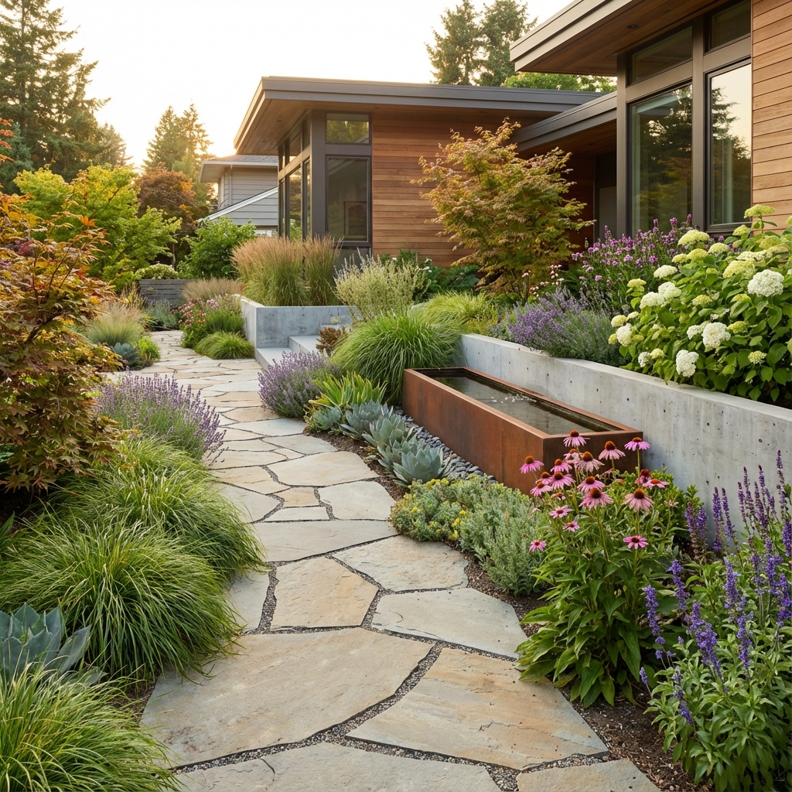

Nossos Serviços de Jardinagem em Uberaba e Região
Cuidamos da sua área verde com equipamentos profissionais e técnica apurada. Confira como podemos ajudar sua casa ou empresa:

Manutenção de Jardins
Corte de grama, poda técnica de árvores e arbustos, adubação e controle de pragas. Mantemos seu jardim impecável.

Limpeza de Terrenos
Roçada e limpeza completa para lotes e terrenos em todos os bairros de Uberaba. Equipe especializada para mato alto.